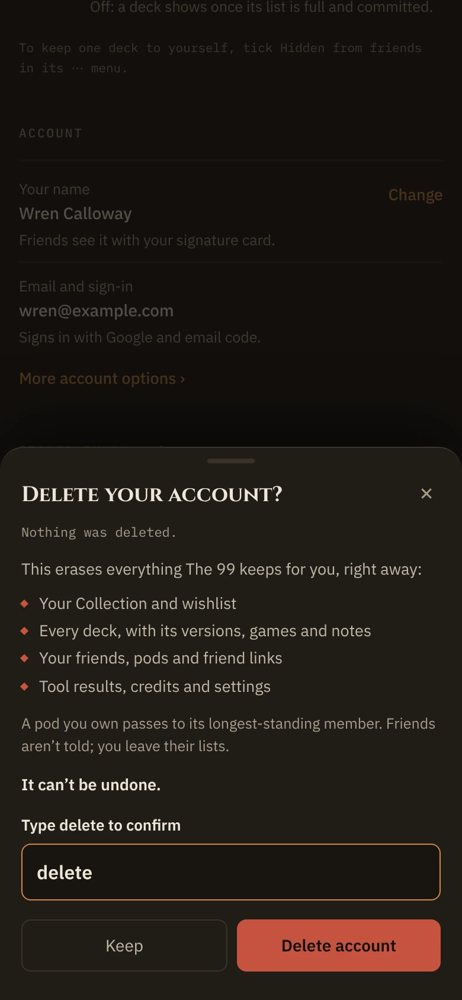
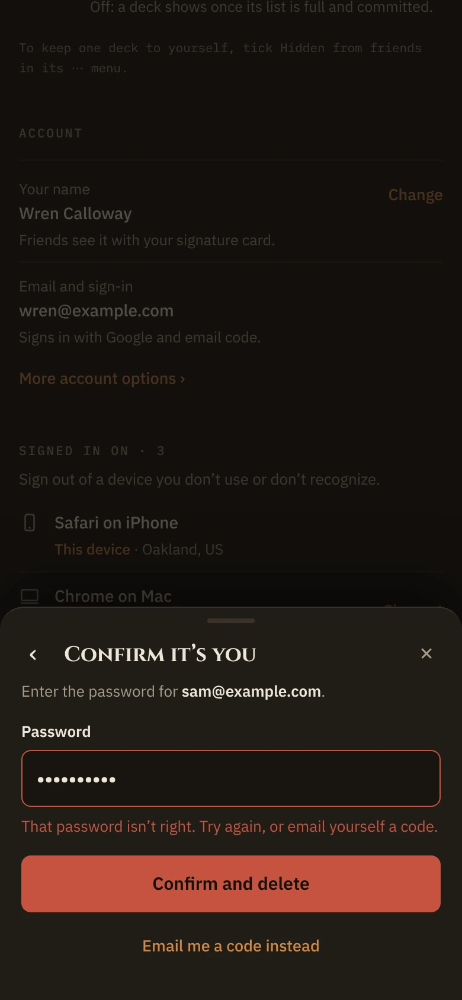
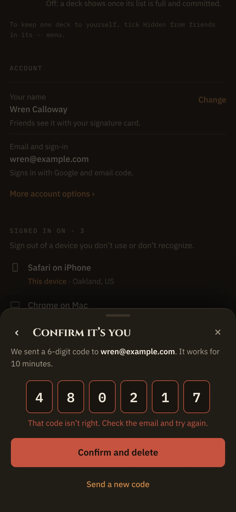
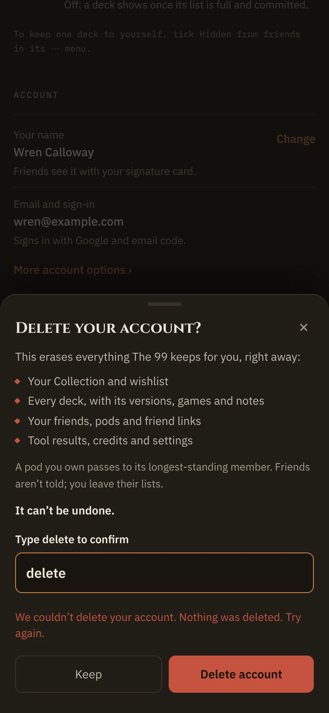
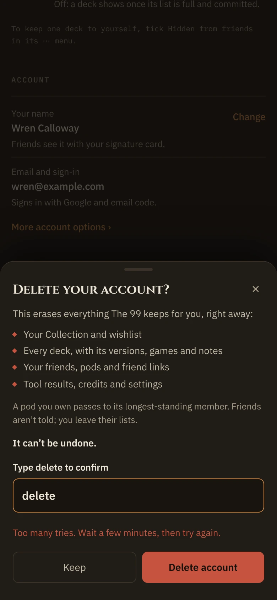
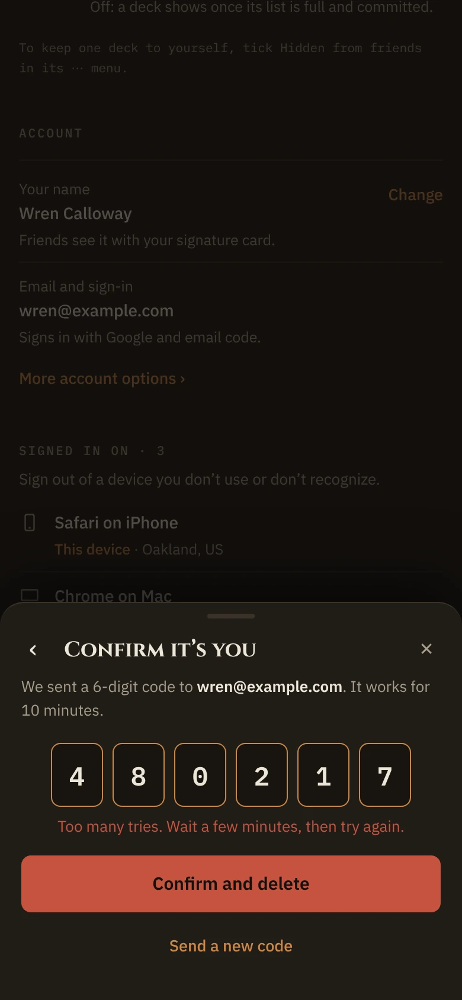

Every line sits where the sign-in puts its refusals (8px under what it refuses, --danger, role=alert). Nothing is ever half deleted: a failure before the purge erased nothing, and the purge itself is one transaction.

‹ on D2 (Clerk's cancel) returns to D1 with the word kept and a quiet mono Nothing was deleted. DRAFT ✕ closes the modal; the account is untouched.

That password isn't right. Try again, or email yourself a code. DRAFT with the danger edge on the field. The link below is the code.

The shipped codeWrong line under the boxes, the boxes in --danger. An expired code takes the shipped codeExpired.

user.delete() refused or the network dropped after the step-up: back on D1, We couldn't delete your account. Nothing was deleted. Try again. DRAFT The word stays; Delete account is live again.

Our limit (src/lib/rate/rules.ts) or Clerk's 429: Too many tries. Wait a few minutes, then try again. DRAFT

The same line under the boxes, which keep the typed code but not the danger edge: the code wasn't wrong.